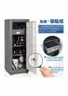

思锐HS260电子防潮防盗柜——防潮防盗两无忧1、使用电子密码输入的方法，免去传统钥匙开门的麻烦；2、密码位数12位以内任选； 3、具有密码记忆功能：设置密码不会因为断电而产生丢失；4、输入密码时有声光提示，保证操作准确无误；5、电压不足提前预告；6、具有完备而灵敏的现场高音（>90dB）报警功能； 7、全自动电子除湿，数显数控，无需人工操作，满足长期保质存储；8、高性能除湿机芯，快速、高效、节能、无污染； 9、内藏式湿度控制，避免外露故障及误触危险；10、柜门采用6毫米高强度冷轧钢板制作，高频氩弧精密焊接；11、采用防潮和防盗双系统独立运作，操作方便，安全可靠。